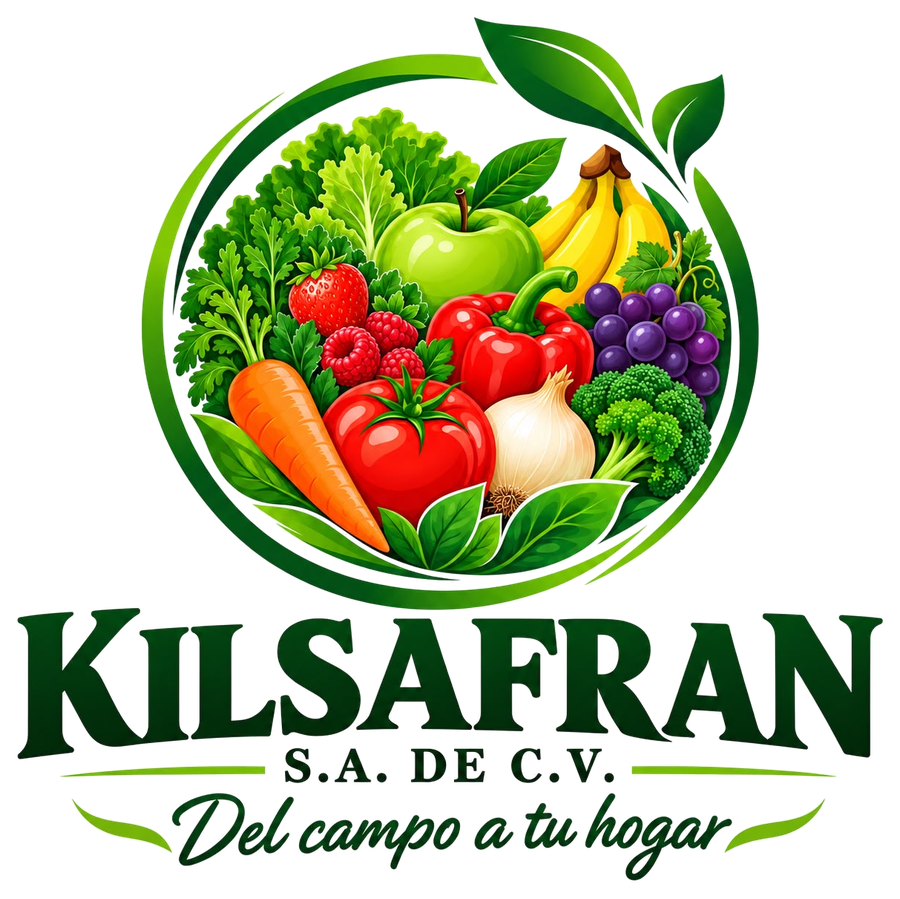
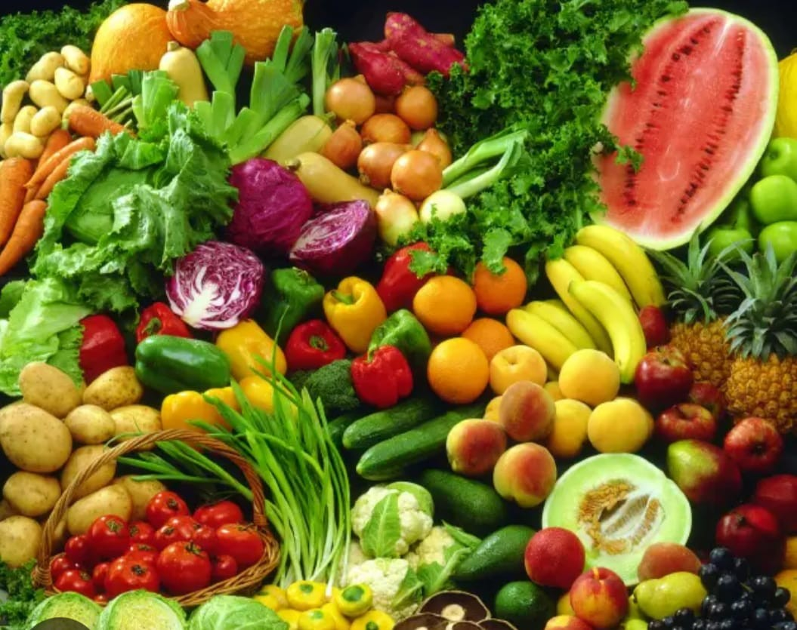
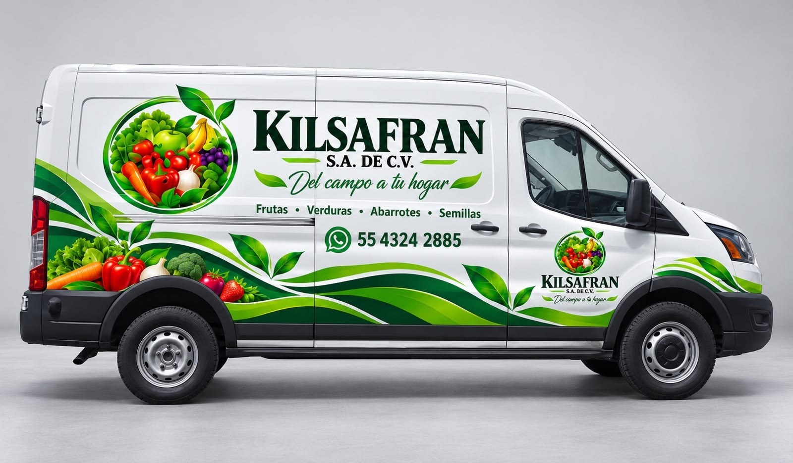

Entrega hasta la puerta de tu restaurante
Llevamos tu pedido directo a tu negocio para que tú te dediques a lo que mejor sabes: cocinar.
- Reparto en CDMX y zona metropolitana
- Pedido empacado y listo para recibir

Del campo a tu hogar
Surtimos restaurantes y negocios con producto fresco, bien empacado y entregado en nuestra camioneta. También llevamos abarrotes y semillas. Dinos qué necesitas y lo llevamos.

Lo que llevamos
Frutas y verduras frescas, abarrotes y semillas. Seleccionamos, empacamos y llevamos todo hasta la puerta de tu negocio, para que tu cocina nunca se quede sin lo esencial.
Lo que hacemos
Tú nos dices qué necesitas; nosotros seleccionamos, empacamos y te lo llevamos.
Llevamos tu pedido directo a tu negocio para que tú te dediques a lo que mejor sabes: cocinar.
Jitomate, pimientos, brócoli, zanahoria, lechuga y todo lo que tu cocina usa a diario.
Quiero pedir estoPlátano, manzana, fresa, cítricos y más, seleccionados para que lleguen en su punto.
Quiero pedir estoTambién entregamos abarrotes y semillas. Pregúntanos por lo que necesitas y te decimos qué hay disponible.
Dinos cantidades y variedad; armamos tu pedido según lo que necesita tu cocina.
Quiero pedir estoEscríbenos, confirma tu pedido y listo. Sin formularios largos ni vueltas.
Quiero pedir estoQuiénes somos
Somos Kilsafran, una empresa dedicada a la entrega de frutas, verduras, abarrotes y semillas. Surtimos a restaurantes y negocios con producto fresco y bien empacado.
Nos encargamos de seleccionar, empacar y llevar tu pedido hasta la puerta, para que tu cocina nunca se quede sin lo esencial.

Cargamos la camioneta con cajas de fruta y verdura y salimos a entregar. Tú nos escribes lo que necesitas; nosotros lo llevamos hasta tu negocio.
Quiero que me lo llevenCómo trabajamos
Cuéntanos por WhatsApp qué productos necesitas y en qué cantidad.
Seleccionamos y empacamos todo en cajas, listo para salir.
Cargamos la camioneta y llevamos tu pedido en ruta.
Tu pedido llega hasta tu restaurante o negocio.
De la caja a tu cocina: producto seleccionado para que lo uses el mismo día que llega.
Restaurantes y marcas que confían en Kilsafran para surtir su cocina.
 El Bodegón de Fito
El Bodegón de Fito Sanborns
Sanborns Daily Salad
Daily SaladEn acción
Así se ve el trabajo de todos los días: producto, equipo y camioneta. Toca cualquier foto para verla completa.
Dudas frecuentes
¿No ves tu duda? Escríbenos por WhatsApp y te respondemos.
Preguntar por WhatsAppAtendemos la Ciudad de México y su área metropolitana. Escríbenos tu colonia por WhatsApp y te confirmamos la entrega.
Por WhatsApp: dinos qué productos necesitas y en qué cantidad, y te confirmamos tu pedido.
Sí, llevamos tu pedido hasta la puerta de tu restaurante o negocio.
Jitomate, pimientos, brócoli, zanahoria, lechuga, plátano, manzana, fresa, zarzamora, kiwi, limón y más. Pregúntanos por lo que necesites y te decimos qué hay disponible.
Sí. Además de frutas y verduras, entregamos abarrotes y semillas. Escríbenos qué necesitas por WhatsApp y te decimos qué hay disponible.
Claro. Armamos el pedido según lo que consume tu cocina.
Escríbenos hoy y arma tu pedido por WhatsApp.
Hablemos
Déjanos tus datos y abrimos WhatsApp con tu mensaje listo. Atendemos CDMX y zona metropolitana.